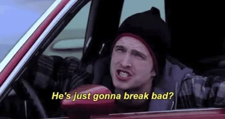

Season 2 (2009)
Tuco and Walter become hostile and Tuco is killed by Hank. After a failed attempt by Walter and Jesse to start their own distribution network leaves one of their dealers arrested and one murdered, Walter hires corrupt lawyer Saul Goodman, who later connects them to high-profile drug distributor Gus Fring and fixer Mike Ehrmantraut. Jesse dates his apartment manager Jane, who introduces him to heroin, making him unreliable. After selling a shipment to Gus, Walt refuses to pay Jesse his half of the money, but Jane blackmails him. Walt returns to Jesse to apologize but instead finds him and Jane passed out on heroin. Although he is capable of intervening and saving her life, Walter allows an unconscious Jane to choke to death on her own vomit. Jesse wakes up the next morning and finds Jane beside him, dead. Traumatized, he enters rehab. Walt seems content until, days after Jane's death, he witnesses a mid-air collision of two planes; a result of Jane's father, an air-traffic controller, becoming distraught over her death while working. 